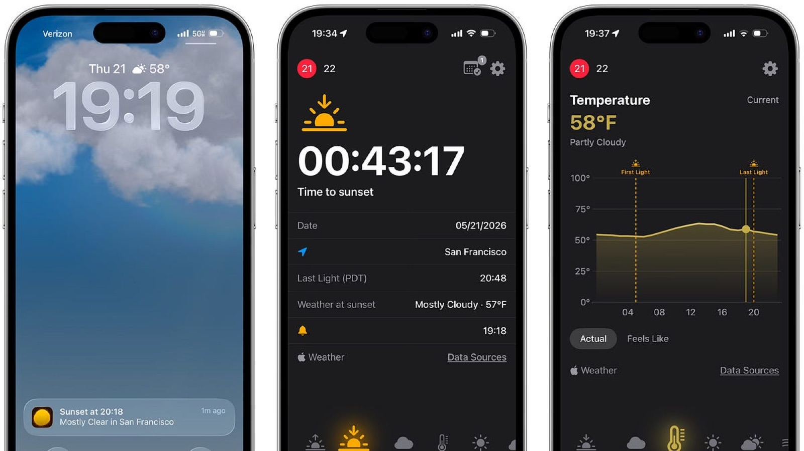
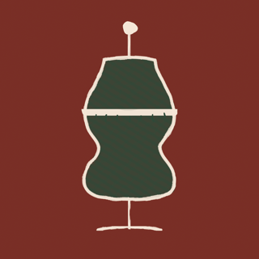
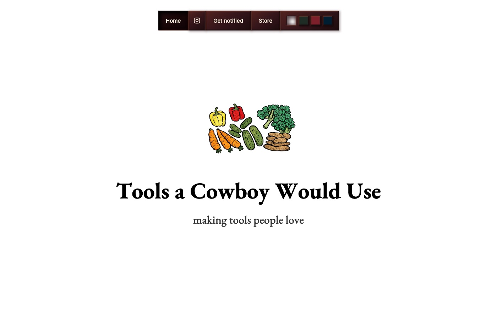
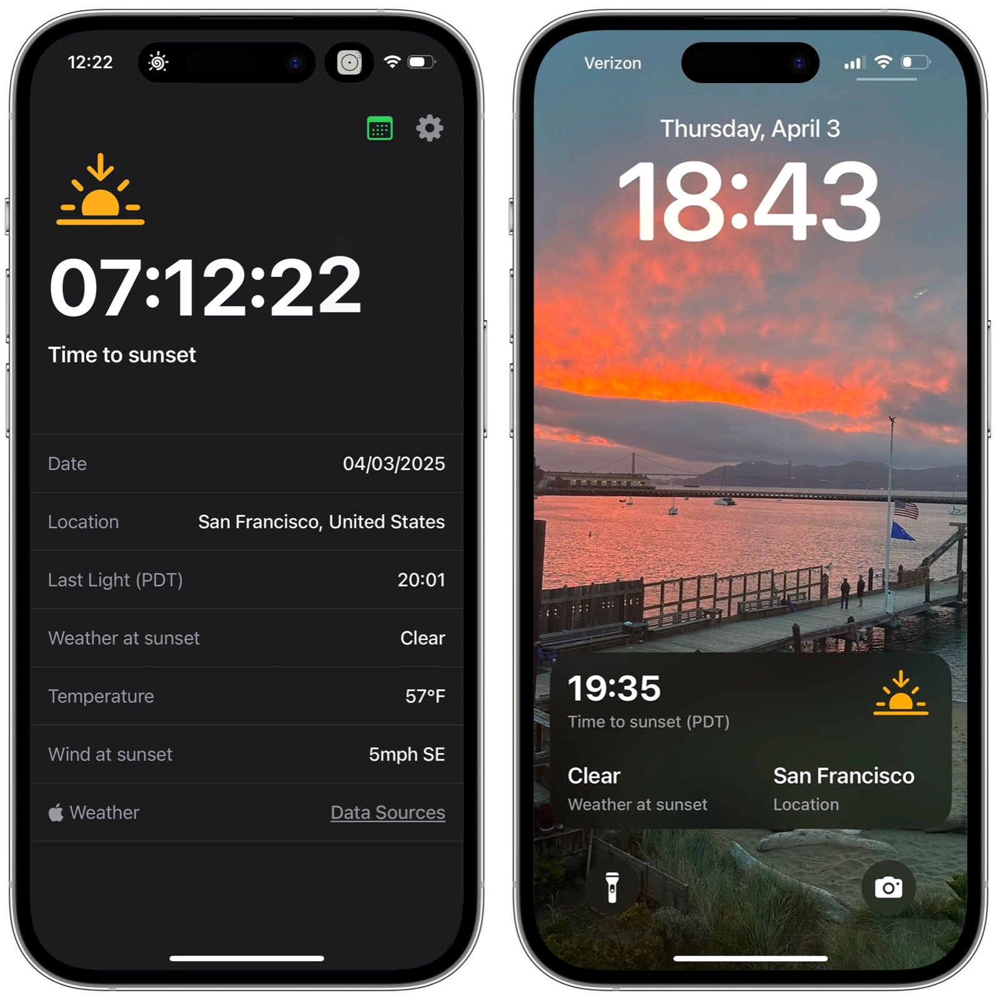
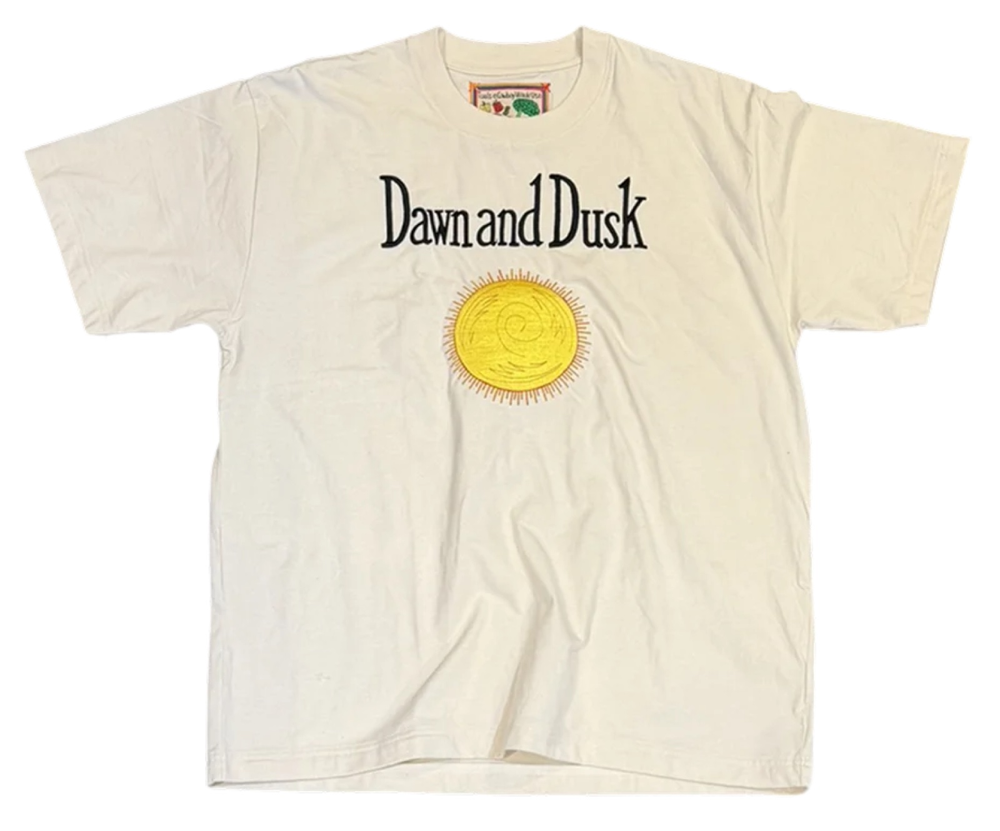

Dawn and Dusk gets its 2026 Summer Update
A year of feedback became version 1.1, with a sunrise alarm, streaks, a community gallery, a compass for the sun, and charts that read like a weather flip book.
Things that happened, and how.

A year of feedback became version 1.1, with a sunrise alarm, streaks, a community gallery, a compass for the sun, and charts that read like a weather flip book.

An iPhone app, promised for 2027, to help people take their own measurements so clothing can be made to order for them rather than bought off a rack.

Canvas pants and twill pants, custom fitted and made to order, announced as the brand's first move from shirts into clothing that is built to last.

An iPhone app for sunrise and sunset, with two notifications a day and nothing collected, became the first product of an art project that makes apps the way a clothing brand makes accessories.
A web companion to the iPhone app, where anyone can search a place on a map and see when the sun rises and sets, with a public gallery of other people's mornings and evenings.

A limited run of made-to-order shirts, each hand embroidered with hand-drawn artwork and a patch for when it was made, that raised Dawn and Dusk "into a category of legendary tools."